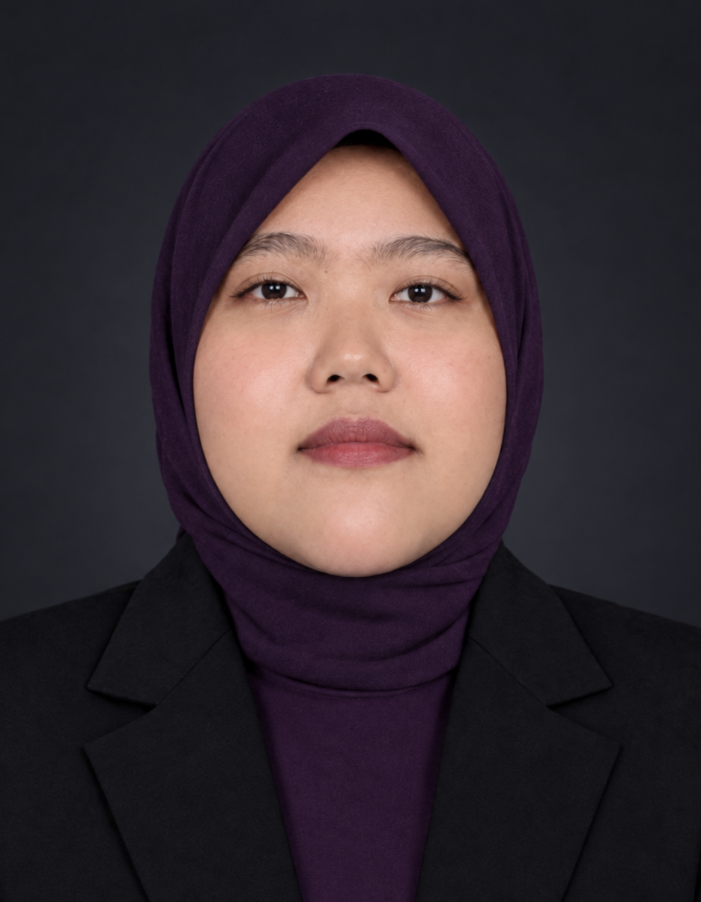

Tentang Saya

Halo, Perkenalkan!
Nama saya Fumiko Opda Laura. Saya adalah mahasiswa Program Studi Teknologi Rekayasa Multimedia. Saya tertarik pada dunia teknologi, desain digital, pemrograman, dan pembuatan konten multimedia.
Saya senang mempelajari hal-hal baru, mencoba berbagai aplikasi digital, dan mengembangkan kemampuan untuk membuat karya yang kreatif, menarik, dan bermanfaat.
Riwayat Pendidikan
-
Sekolah Dasar (SD)
Nama Sekolah: SD Negeri Bojong 1
-
Sekolah Menengah Pertama (SMP)
Nama Sekolah: MTs Ulin Nuha
-
Sekolah Menengah Atas (SMA/SMK)
Nama Sekolah: SMK Avicenna Mandiri
-
Perguruan Tinggi
Politeknik Digital Boash Indonesia, Program Studi Teknologi Rekayasa Multimedia, Semester 3.
Hobi dan Keahlian
Hobi
- Mendengarkan musik
- Bermain game
- Mempelajari tarot
- Membuat desain digital
Keahlian
- Desain grafis dan pengolahan gambar
- Pengeditan audio dan video
- Dasar animasi dan multimedia
Jadwal Kuliah Semester 3
Berikut adalah daftar mata kuliah semester 3 Program Studi Teknologi Rekayasa Multimedia, kelas TRM2B1, tahun ajaran 2026/2027.
| No. | Waktu | Mata Kuliah | SKS | Dosen | Keterangan |
|---|---|---|---|---|---|
| 1 | 17.00–19.00 | Probabilitas dan Statistika | 2 | Joy Lawa Rizky, M.Kom. | Online |
| 2 | 19.00–21.00 | Kepemimpinan dan Kewirausahaan | 2 | Dr. Jumadi, S.E. | Online |
| 3 | 08.00–10.00 | Visualisasi dan Animasi 3D | 3 | Hersanto Fajri, S.Ds., MMD. | Ruang kelas/praktikum |
| 4 | 10.00–12.00 | Audio Visual | 3 | Hersanto Fajri, S.Ds., MMD. | Ruang kelas/praktikum |
| 5 | 13.00–15.00 | Grafika Komputer dan Pengolahan Citra | 3 | Marastika Aji Bawono, M.Kom. | Ruang kelas/praktikum |
| 6 | 15.00–17.00 | Pemrograman Berorientasi Objek | 3 | Joy Lawa Rizky, M.Kom. | Ruang kelas/praktikum |
| 7 | 19.00–21.00 | Pemrograman Berbasis Web | 3 | Shofyan, M.Kom. | Ruang kelas/praktikum |
Total mata kuliah: 7. Total beban studi: 19 SKS.
Kontak Saya
Jika ingin mengenal saya lebih jauh atau berdiskusi mengenai teknologi dan multimedia, silakan hubungi saya melalui tautan berikut.